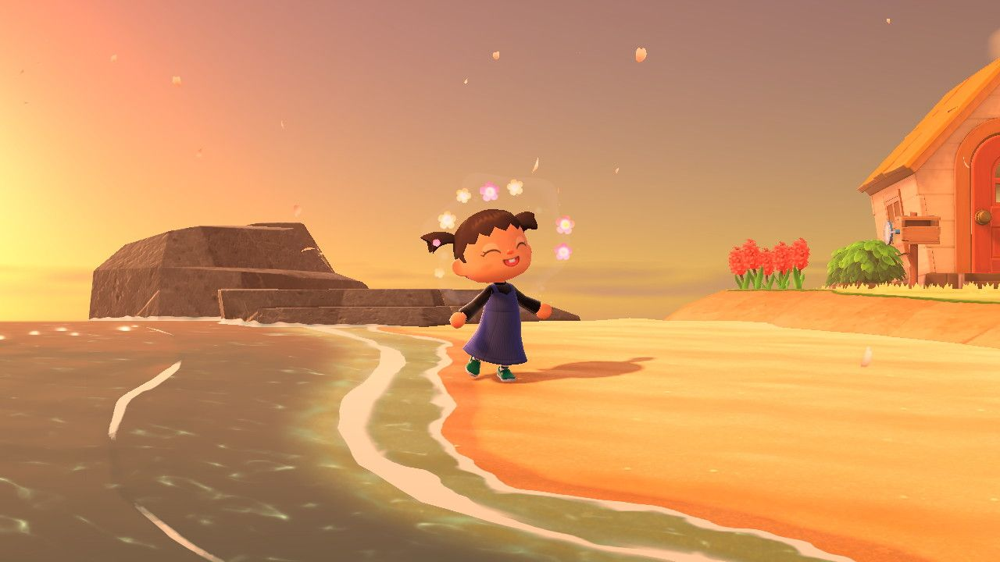

Hey y'all, my name is Monika. I am currently a student at San Diego Mesa Community College pursuing an Associates Degree in Web Development. I also have a Bachelors of Arts Degree in Art and Design: Games and Playable Media from the University of California, Santa Cruz. I plan to purse a career in web development while also relearning my skills from my bachelors degree so that I can hopefully reach my dream goal of being a rigger/3D animator for Pixar. My favorite hobbies/skills I've obtained since starting my college career include 3D Modeling, Rigging, Texturing, and Programming. I've found I like doing the tedious tasks of UV Unwrapping models and Weight Painting. I also became somewhat familiar with Unity where I worked with a team on 3 separate projects.
Outside of my education, my favorite hobbies are:
I love to spend my time gaming, it's what I mainly do outside of school. My most played games consist of Destiny 2, American Truck Simulator, and Supermarket Simulator. When I'm not on a game, I spend time watching movies and shows with my friends. We range from watching horror movies like Insidious to comedy movies like Dodgeball. Show wise, we've watched various genres from shows like To Be Hero X (Anime) to Peaky Blinders (British Drama). Lastly, building Legos. I absolutely adore building Lego sets, it has become such a comfort. I currently collect a variety of sets but my biggest collections are Star wars and Jurassic Park. I'm waiting for the day where I can buy the huge Millennium Falcon.
I incorporate my hobbies into my daily routine. My evenings/nights are filled with spending time with friends in Discord where we play together or watch a movie. Currently we're watching the Marvel Infinity Saga so we're prepared for the new Avengers Movie. When we're not watching a movie, I spend my time on either Battlefield 6 or Animal Crossing: New Horizons which I recently picked back up.
